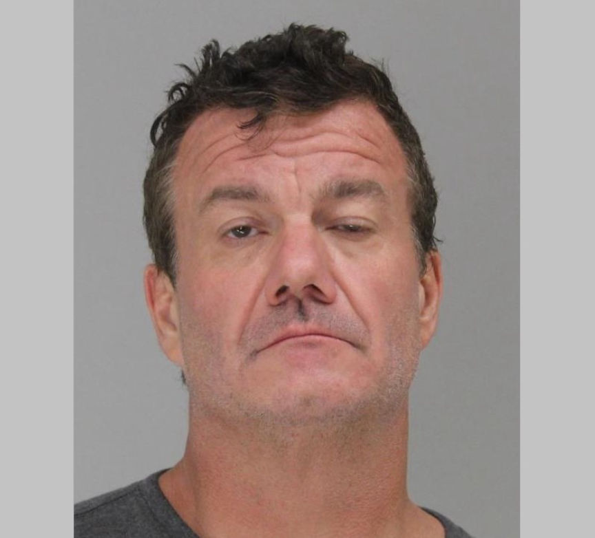
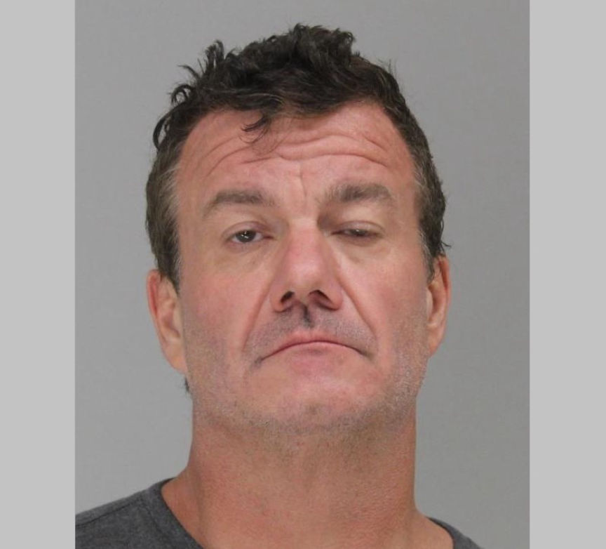

Fentanyl Vendor "Fent4U" Sentenced to Prison
A Texas man was sentenced to more than 24 years in federal prison after he was convicted of multiple drug trafficking offenses and possession of child pornography.

Sean Shaughnessy, 55, distributed large quantities of fentanyl and its analogues through the "Fent4U" vendor profile on dark web markets. Investigators linked his drug trafficking operation to the overdose death of one of his customers.
Shaughnessy's sentencing resulted from investigations that were part of Operation Dark Gold. In the year-long operation, undercover investigators posed as a money launderer and provided their services to dark web vendors.
In Shaughnessy's case, the investigators received a total of approximately $120,000 in bitcoin. They in return mailed cash to Shaughnessy's residence in Dallas.
An officer’s body-camera footage recorded during Shaughnessy's arrest in July 2016 was presented as evidence during his trial. The video showed Shaughnessy with white powder visible around his nose. He took a baggie of drugs from his pocket as officers handcuffed him, and attempted to kick the drugs away from the officers' view. Shaughnessy insisted the drugs weren't his after the officers saw the baggie.
Several of his former customers testified during the trial and claimed that Shaughnessy's drugs were highly potent and always arrived on time.
The jury found him guilty of conspiracy to possess with intent to distribute a controlled substance, conspiracy to possess with intent to distribute a controlled substance analogue, distribution of controlled substances, and possession of child pornography, in June 2023.
Shaughnessy was sentenced to 24 years and 5 months in prison on February 9, 2024.

Sean Shaughnessy
Sean Shaughnessy, 55, distributed large quantities of fentanyl and its analogues through the "Fent4U" vendor profile on dark web markets. Investigators linked his drug trafficking operation to the overdose death of one of his customers.
Shaughnessy's sentencing resulted from investigations that were part of Operation Dark Gold. In the year-long operation, undercover investigators posed as a money launderer and provided their services to dark web vendors.
In Shaughnessy's case, the investigators received a total of approximately $120,000 in bitcoin. They in return mailed cash to Shaughnessy's residence in Dallas.
An officer’s body-camera footage recorded during Shaughnessy's arrest in July 2016 was presented as evidence during his trial. The video showed Shaughnessy with white powder visible around his nose. He took a baggie of drugs from his pocket as officers handcuffed him, and attempted to kick the drugs away from the officers' view. Shaughnessy insisted the drugs weren't his after the officers saw the baggie.
Several of his former customers testified during the trial and claimed that Shaughnessy's drugs were highly potent and always arrived on time.
The jury found him guilty of conspiracy to possess with intent to distribute a controlled substance, conspiracy to possess with intent to distribute a controlled substance analogue, distribution of controlled substances, and possession of child pornography, in June 2023.
Shaughnessy was sentenced to 24 years and 5 months in prison on February 9, 2024.